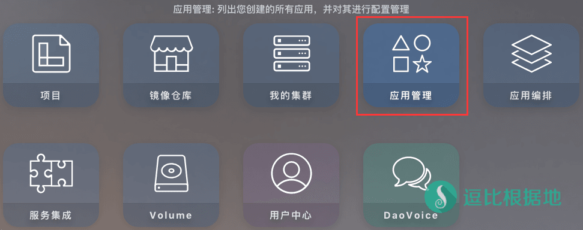
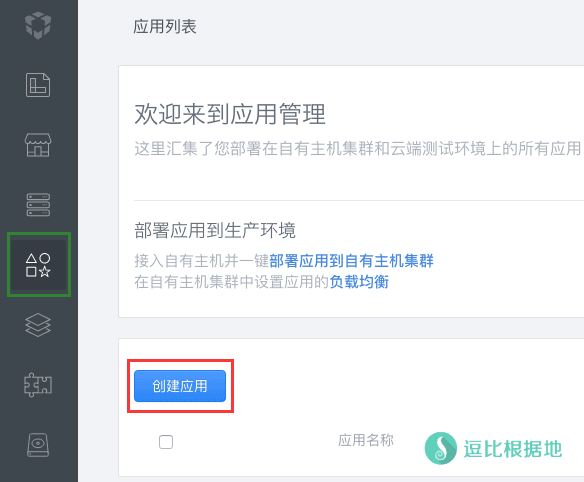
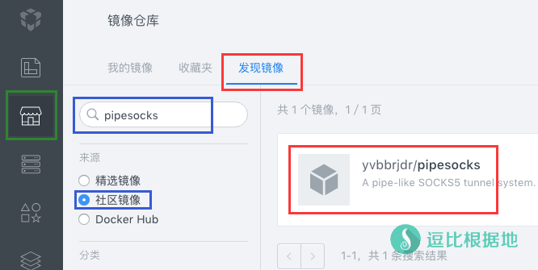
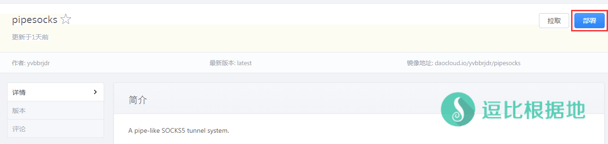
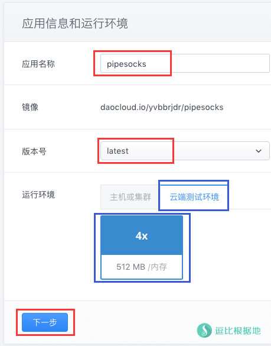
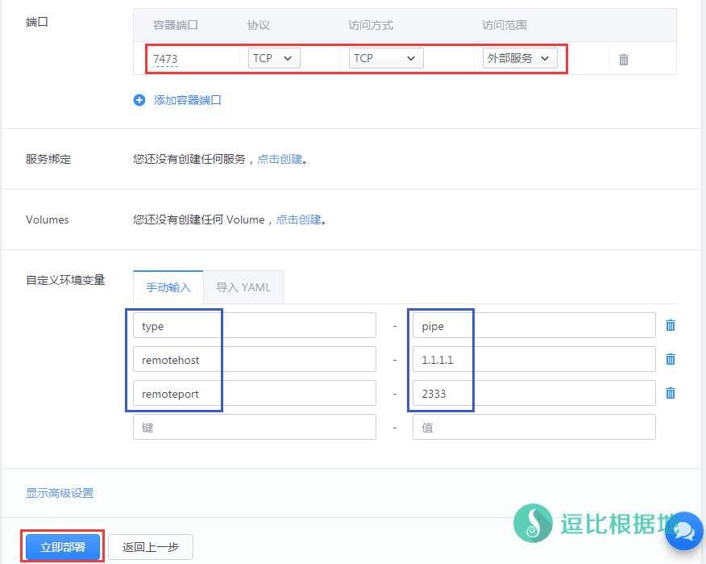
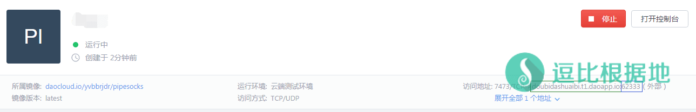
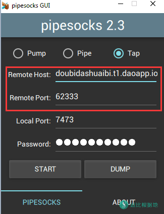

大家好，我是PipeSocks的作者，很荣幸能在逗比聚集地发表一篇教程，关于在DaoCloud上部署PipeSocks的水泵和管道。
这是我第一次公开发表关于PipeSocks-Pipe的使用方法，之所以不在官方教程里面介绍pipe有三个原因：
- 一是，是因为我懒= =；
- 二是，我之前没有重视 Pipe 的作用，直到前几天它把我一个连接速度很慢的VPS（500Kbps，而且波动很大）提速到了4-5Mbps，我才开始注意到pipe的功效；
- 三是，如果我要出官方教程，我肯定不能指定用哪个服务提供商的服务，我应该出一个所有地方都能用的教程。
基于这些原因，我准备在这个地方发表关于PipeSocks-Pipe的教程，同时也是让大家学会Docker的使用方法，以便你能够在Arukas这样的网站来部署PipeSocks-Pump。同时我也会顺带讲一下如何在DaoCloud上部署PipeSocks-Pump，因为有很多小伙伴在海外，需要翻回来使用一些服务。
在云端部署Tap是非常不被建议的，因为会导致你的数据在网络中明文传输，所以教程中不会涉及Tap。
目前 PipeSocks 已经停止维护很长时间了，如非必须，不推荐使用！
原理简介
在教程之前，我想再次阐述一下pipesocks中 Tap <=> Pipe <=> Pump 结构的运作原理，让你理解为什么以及要在哪里部署PipeSocks-Pipe。
Client <= (SOCKS5) => Tap <= (PipeSocks) => Pump <= (Plain Data) => Server
这是不用 Pipe 的时候你的网络数据所经过的隧道（括号里是协议）。
客户端软件通过 Socks5协议连接上 Tap，Tap将之转换为 PipeSocks协议，与墙外的 Pump通信，最后 Pump和服务器直接连接明文通信。这三段连接中， Client(例如浏览器) <=> Tap 一定是最快的（因为是在同一台设备上）， Pump <=> Server 也不会慢（取决于你的VPS联网速度），而 Tap <=> Pump 就不一定了。
由于中国奠信（世界加钱可及）的国际出口限速， Tap <=> Pump 经常是很慢的。这样一个速度不平均的隧道会导致数据积压（上传时数据积压在Tap，下载时积压在Pump #用水流的模型会很容易理解#），速度慢，占用大量内存。
这个时候 Pipe 的作用就显现出来了。我们选择一台连接 Tap 和 Pump 都很快的服务器装上 Pipe，让所有数据经过这台服务器转发，那这样整个隧道就会非常通畅，连接速度也会显著提升。我在设计 Pipe 的时候是将它定位成一个无条件TCP转发器（TCP流量中转）。因为SS(R)协议也是（可以）基于TCP的，所以同样地， Pipe 也可以用于转发SS(R)流量。在本文最后会提到这个。
DaoCloud是符合上面条件的服务器之一，所以我以DaoCloud为例来讲解。（要注意，DaoCloud似乎给国际出口限速在5Mbps（不过看1080p60是没有压力的），并且每24小时会关闭一次你的服务器，需要手动打开）
简单的说， Pipe 就是一个集成在 Pipesocks 的一个TCP流量中转工具，而DaoCloud提供免费的国内Docker服务，所以你还需要一个海外的服务器搭建Pump或者Shadowsocks(R)服务端。
注意：DaoCloud是中国企业。
开始教程
首先你需要注册一个 DaoCloud账号：http://account.daocloud.io/signup
然后登陆进去控制面板：https://dashboard.daocloud.io/
注意：注册登陆进去后，会提示你 开启30天免费试用，直接点击 取消 按钮！
创建应用
进入控制台后，点击 应用管理 按钮。

然后点击 创建应用 按钮。

搜索并选择镜像
选择 发现镜像 ，按照图示来源选择 社区镜像，并搜索 pipesocks ，然后点击搜索出来的镜像继续。

进入 pipesocks 镜像详情页面后，点击右上角的 部署 按钮。

设置镜像部署信息
然后填写应用信息，应用名称 随意，运行环境选择 云端测试环境 ，否则是要花钱的，然后继续点击 下一步 按钮。

容器端口、协议、访问方式（TCP）、访问范围 请和图片示例保持一致。
然后在自定义环境变量中选择 手动输入，然后依次如图输入以下 环境变量和变量值：
type - pipe（这个代表是使用PipeSocks的Pipe功能，也就是国内中转。） remotehost - pump（pipesocks服务端）所在服务器的IP（图中示例 1.1.1.1 ） remoteport - pump（pipesocks服务端）的端口（图中示例 2333 ）
填写完成后，点击左下角的 立即部署 按钮。

完成部署
等大概一分钟，PipeSocks的Pipe就会部署并运行成功，这时候在当前镜像的控制面板中，会显示出 访问地址，即图中绿框和蓝框选中的内容。
绿框就是你的 Pipe IP(主机名)，蓝框就是你的 Pipe 端口。
打开 PipeSocks客户端，Remote Host 输入绿框中的 Pipe IP ，Remote Port 输入蓝框中的 Pipe 端口 ，密码和 Pump(PipeSocks服务端)一致，然后点击 START 按钮启动即可。


其他说明
DaoCloud部署 Pump
如果要部署 Pump(PipeSocks服务端)，只需要在上面步骤中的，自定义环境变量中，设置环境变量和变量值如下：
type - pump password - 密码
部署之后就是一个 Pump(PipeSocks服务端)，在你PipeSocks客户端中 Remote Host 输入 获得的绿框访问地址，Remote Port 输入 蓝框的端口，Password 输入你刚设置环境变量的密码 ，点击 START 按钮启动即可。
Pipe转发Shadowsocks(R) TCP流量
如果要用 Pipe 转发 Shadowsocks(R) TCP流量的话，和上面的 pipe 配置步骤是一样。
主要区别是：设置自定义环境变量时， remotehost 的值改成 Shadowsocks(R)服务器IP地址， remotehost 改成Shadowsocks(R)服务器 端口 即可，其他不变。
在Shadowsocks(R)客户端上用Shadowsocks(R)连接DaoCloud给你的 域名(绿框) 和 端口(蓝框)，其他配置（密码/加密方式/协议/混淆）都不变。
转载请超链接注明：逗比根据地 » DaoCloud免费部署 PipeSocks 国内中转Pipe/Pump
责任声明：本站一切资源仅用作交流学习，请勿用作商业或违法行为！如造成任何后果，本站概不负责！